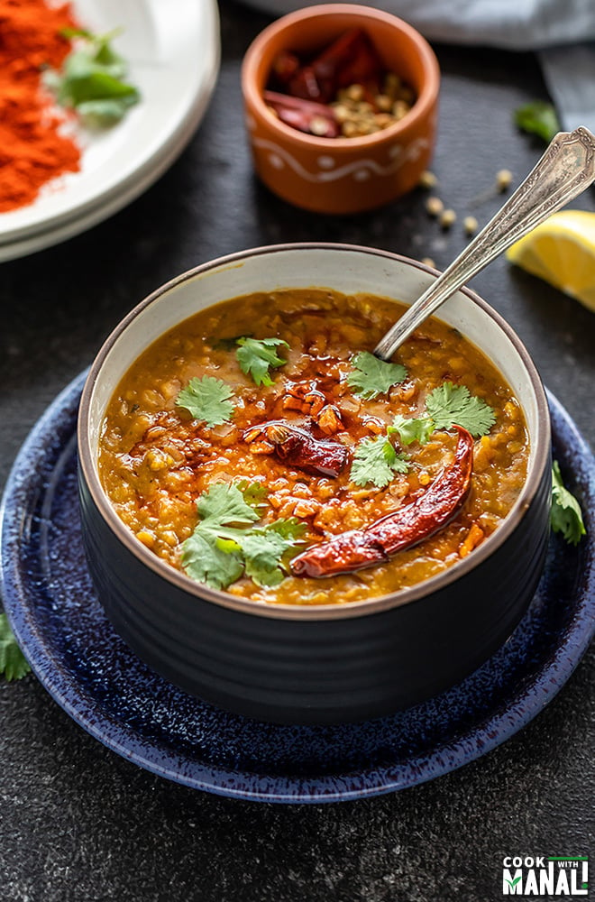

Dal Tadka

Description
Dal Tadka is a popular Indian dish made with yellow lentils, tempered with aromatic spices, and garnished with
fresh coriander leaves. It's a flavorful and comforting dish that pairs well with rice or Indian bread.
Ingredients
- Yellow Lentils (Toor Dal)
- Onions
- Tomatoes
- Green Chilies
- Garlic
- Ginger
- Turmeric Powder
- Mustard Seeds
- Cumin Seeds
- Asafoetida (Hing)
- Curry Leaves
- Fresh Coriander Leaves
- Oil or Ghee
- Salt
Steps
Step 1: Cooking Lentils
- Wash the lentils thoroughly and cook them in a pressure cooker with water, turmeric powder, and salt until
soft.
- Mash the cooked lentils with a ladle or spoon.
Step 2: Tempering
- Heat oil or ghee in a pan.
- Add mustard seeds and cumin seeds. Let them splutter.
- Add chopped onions, green chilies, garlic, and ginger. Sauté until onions are golden brown.
- Add chopped tomatoes, turmeric powder, and salt. Cook until tomatoes are soft and oil separates.
- Pour this tempering over the cooked lentils. Mix well.
Step 3: Garnish and Serve
- In the same pan, heat a little oil or ghee.
- Add asafoetida (hing) and curry leaves. Sauté briefly.
- Pour this tadka (tempering) over the dal.
- Garnish with fresh coriander leaves.
- Serve hot with rice or Indian bread.